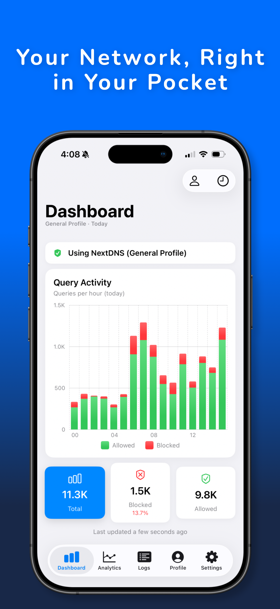
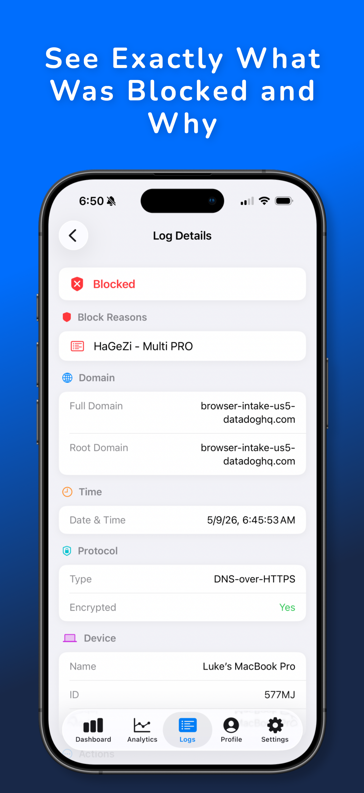
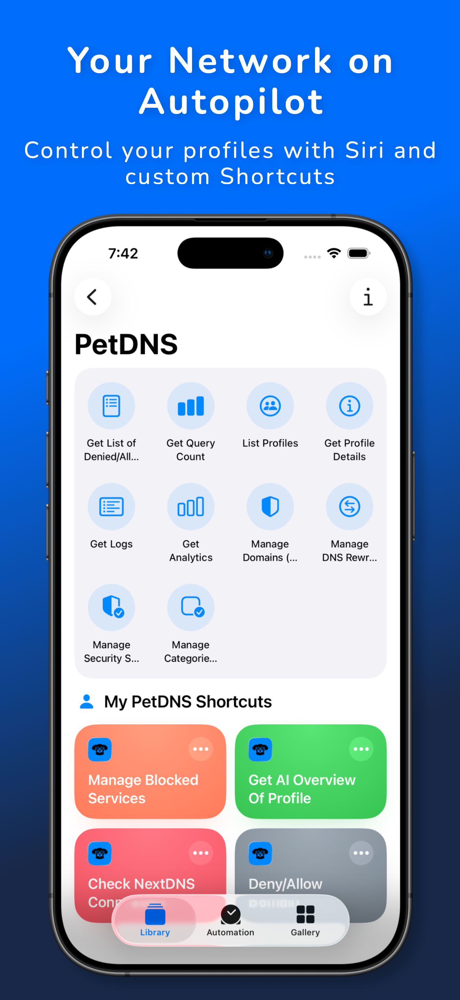
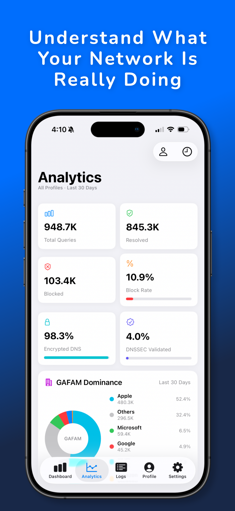
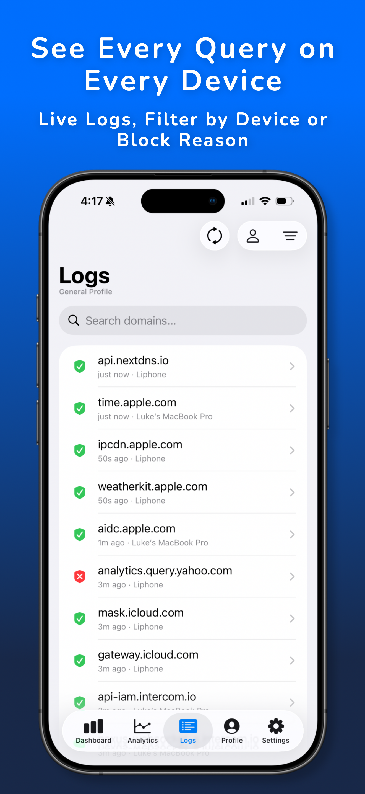

NextDNS profile management built for iOS: native, fast, and automated.
Download on the App StorePetDNS gives you full control over your NextDNS profiles directly from your iPhone or iPad. Do a deep dive on your DNS query logs, manage your denylist and allowlist, investigate query analytics, and adjust advanced settings all from a fully native app! Get at a glance information with a configurable dashboard and widgets. Automate your management across profiles by adjusting deny/allow lists, DNS Rewrites, reporting on query analytics, and more!
PetDNS promises to provide all services and features available on the NextDNS website, including data retrieval, viewing logs, and managing settings for all of your individual profiles, in the app at no cost. The app's subscription unlocks what goes beyond the website: multi-profile views, cross-profile log search, and automation with Siri and Shortcuts.




